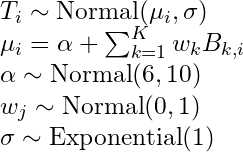

brms
Misc
- How brms fits models
.png)
- The marginal Sigma posterior distribution is the distribution of residuals
- Sampling the posterior
Logistic
# sampling the posterior f <- fitted(b3.1, summary = F, # says we want simulated draws and not summary stats scale = "linear") %>% # linear outputs probabilities as_tibble() %>% set_names("p")
- Optimization
- {cmdstanr} as the backend
In the brms model function
backend="cmdstanr", stan_model_args=list(stanc_options = list("O1"))stanc_options = list("O1")might be made default in a future update- See thread for details
Set using options:
options(brms.backend = "cmdstanr"
- {cmdstanr} as the backend
Linear Regression
Example: lm, Cont ~ Cont (SR, Ch.4)
b4.3 <- brm(data = dat, family = gaussian, height ~ 1 + weight, prior = c(prior(normal(178, 100), class = Intercept), prior(normal(0, 10), class = b), prior(uniform(0, 50), class = sigma)), iter = 41000, warmup = 40000, chains = 4, cores = 4, seed = 4, backend = "cmdstanr", )Example: Multivariable, Cont ~ Cont + Cont (SR, Ch.5)
b5.3 <- brm(data = dat, family = gaussian, Divorce ~ 1 + Marriage_s + MedianAgeMarriage_s, prior = c(prior(normal(10, 10), class = Intercept), prior(normal(0, 1), class = b), prior(exponential(1), class = sigma)), iter = 2000, warmup = 1000, chains = 4, cores = 4, seed = 5, backend = "cmdstanr", file = "fits/b05.03")- Outcome = Divorce rate, Predictor 1 = state’s marriage rate, Predictor 2 = state’s median marriage age
Example: Binary/Cat, Cont ~ Binary (SR, Ch. 5)
data(Howell1, package = "rethinking") d <- Howell1 d <- d %>% mutate(sex = ifelse(male == 1, 2, 1), # create index variable sex = factor(sex)) # transforming it into a factor tells brms it's indexed b5.8 <- brm(data = d, family = gaussian, height ~ 0 + sex, # "0 +" notation means calculate separate intercepts for each category prior = c(prior(normal(178, 20), class = b), prior(exponential(1), class = sigma)), iter = 2000, warmup = 1000, chains = 4, cores = 4, seed = 5, backend = "cmdstanr", file = "fits/b05.08") print(b5.8)- For nominal variable, increase the s.d. of the α prior (as compared to the binary prior) “to allow the different
to disperse, if the data wants them to.” - “I encourage you to play with that prior and repeatedly re-approximate the posterior so you can see how the posterior differences among the categories depend upon it.”
- For nominal variable, increase the s.d. of the α prior (as compared to the binary prior) “to allow the different
Example: Multi-Categorical, Cont ~ Cat + Cat (SR, Ch. 5)
b5.11 <- brm(data = d, family = gaussian, # bf() is an alias for brmsformula() that lets you specify model formulas bf(kcal.per.g_s ~ 0 + a + h, a ~ 0 + clade, h ~ 0 + house, # tells brm we're using non-linear syntax nl = TRUE), prior = c(prior(normal(0, 0.5), nlpar = a), prior(normal(0, 0.5), nlpar = h), prior(exponential(1), class = sigma)), iter = 2000, warmup = 1000, chains = 4, cores = 4, seed = 5, backend = "cmdstanr", file = "fits/b05.11")(As of May 2022) When using the typical formula syntax with more than one categorical variable, {brms} drops a category from every categorical variable except for the first one in the formula.
{brms} was orginally designed to wrap Stan multi-level models w/lme4 syntax, so maybe that has something do with it.
Kurz has links and discussion in Section 5.3.2 of his ebook
Example: Interaction, continuous * categorical (SR, Ch.8)
# same as coding for cat vars except adding a slope that is also conditioned on the index b8.3 <- brm(data = dd, family = gaussian, # bf = "brms formula" bf(log_gdp_std ~ 0 + a + b * rugged_std_c, a ~ 0 + cid, b ~ 0 + cid, # nl = "nonlinear" syntax nl = TRUE), prior = c(prior(normal(1, 0.1), class = b, coef = cid1, nlpar = a), prior(normal(1, 0.1), class = b, coef = cid2, nlpar = a), prior(normal(0, 0.3), class = b, coef = cid1, nlpar = b), prior(normal(0, 0.3), class = b, coef = cid2, nlpar = b), prior(exponential(1), class = sigma)), iter = 2000, warmup = 1000, chains = 4, cores = 4, seed = 8, backend = "cmdstanr", file = "fits/b08.03")- Categorical variable needs an interaction spec and an intercept (main effect) spec
Example: Interaction, continuous * continuous (SR, Ch.8)
b8.5 <- brm(data = d, family = gaussian, blooms_std ~ 1 + water_cent + shade_cent + water_cent:shade_cent, prior = c(prior(normal(0.5, 0.25), class = Intercept), prior(normal(0, 0.25), class = b, coef = water_cent), prior(normal(0, 0.25), class = b, coef = shade_cent), prior(normal(0, 0.25), class = b, coef = "water_cent:shade_cent"), prior(exponential(1), class = sigma)), iter = 2000, warmup = 1000, chains = 4, cores = 4, seed = 8, backend = "cmdstanr", file = "fits/b08.05")Example: Interaction, categorical * categorial (mc-stan question)(SR, Lecture 9 video, Ch. 11 Note)
fit <- brm(bf(y ~ 0 + a + b + c, a ~ 0 + F1, b ~ 0 + F2, # this is the interaction c ~ (0 + F1) : (0 + F2), nl = TRUE), data = dat) # interaction-only model (should include main effects) brm_mod <- brm(data = ucb_01, family = bernoulli, bf(admitted ~ 0 + gd, # this is the interaction gd ~ (0 + gender) : (0 + dept), nl = TRUE), prior = prior(normal(0,1), nlpar = gd), iter = 2000, warmup = 1000, cores = 3, chains = 3, seed = 10, backend = "cmdstanr")
Logistic Regression
Example: Logistic, cont ~ cat + cat (SR, Ch.11)
b11_bern <- brm(data = dat_sim, family = bernoulli(link = "logit"), bf(admit ~ a + d, a ~ 0 + gid, d ~ 0 + dept, nl = TRUE), prior = c(prior(normal(0, 1), nlpar = a), prior(normal(0, 1), nlpar = d)), iter = 4000, warmup = 1000, cores = 4, chains = 4, seed = 11, backend = "cmdstanr") print(b11_bern) Estimate Est.Error l-95% CI u-95% CI Rhat Bulk_ESS Tail_ESS a_gidmale -1.06 0.51 -2.05 -0.07 1.00 1765 2356 a_gidfemale -0.97 0.50 -1.96 0.00 1.00 1758 2366 d_dept1 -1.54 0.51 -2.55 -0.54 1.00 1773 2419 d_dept2 -0.50 0.50 -1.46 0.48 1.00 1763 2249 b11.4_bin <- brm(data = dat_sim, family = binomial, bf(admit | trials(1) ~ a + d, a ~ 0 + gid, d ~ 0 + dept, nl = TRUE), prior = c(prior(normal(0, 1), nlpar = a), prior(normal(0, 1), nlpar = d)), iter = 2000, warmup = 1000, chains = 4, cores = 4, seed = 11, backend = "cmdstanr") print(b11_bin) Estimate Est.Error l-95% CI u-95% CI Rhat Bulk_ESS Tail_ESS a_gidmale -1.02 0.52 -2.05 0.01 1.01 702 832 a_gidfemale -0.94 0.52 -1.98 0.06 1.01 688 808 d_dept1 -1.58 0.53 -2.60 -0.53 1.01 693 787 d_dept2 -0.53 0.52 -1.53 0.49 1.01 685 718- Slightly different results (100ths). I feel more comfortable using the bernoulli spec if it’s just a typical logistic regression.
- The “1” in “|trials(1)” says that this is case-level data
- Including a | bar on the left side of a formula indicates we have extra supplementary information about our criterion. In this case, that information is that each pulled_left value corresponds to a single trial (i.e., trials(1)), which itself corresponds to the n = 1 in the model specification (above) for the outcome variable (e.g. pulled_left).
- The rest of the brms specification is standard for having two categorial explanatory variables (e.g. actor, treatment) (see Ch.5 >> categoricals >> multiple nominal)
- i.e. ingredients for Logistic Regression: family = Binomial and binary_outcome|trials(1)
Example: Multinomial Logistic Regression (SR, Ch. 11)
b11.13io <- brm(data = d, # refcat sets the reference category to the 3rd level family = categorical(link = logit, refcat = 3), career ~ 1, prior = c(prior(normal(0, 1), class = Intercept, dpar = mu1), prior(normal(0, 1), class = Intercept, dpar = mu2)), iter = 2000, warmup = 1000, cores = 4, chains = 4, seed = 11, backend - "cmdstanr", file = "fits/b11.13io") b11.13io ## Estimate Est.Error l-95% CI u-95% CI Rhat Bulk_ESS Tail_ESS ## mu1_Intercept -2.01 0.15 -2.30 -1.73 1.00 3324 2631 ## mu2_Intercept -1.53 0.12 -1.77 -1.29 1.00 2993 2768as of brms 2.12.0, “specifying global priors for regression coefficients in categorical models is deprecated.” Meaning — if we want to use the same prior for both, we need to use the
dparargument for eachThe reference level,
refcat, was set to the 3rd level so the scores for the levels 1 and 2 are shown- Default is level 1.
- Had we used the brms default and used the first level of “career” as the pivot (aka reference category), those lines would have instead been dpar = mu2 , dpar = mu3
These are the score values that we’d get if we centered all the scores at level 3’s score value
- Nothing to infer from these. We want the probabilities which are in the next section.
Alternate ways to fit this model
# verbose syntax b11.13io_verbose <- brm(data = d, family = categorical(link = logit, refcat = 3), bf(career ~ 1, mu1 ~ 1, mu2 ~ 1), prior = c(prior(normal(0, 1), class = Intercept, dpar = mu1), prior(normal(0, 1), class = Intercept, dpar = mu2)), iter = 2000, warmup = 1000, cores = 4, chains = 4, seed = 11, file = "fits/b11.13io_verbose") # nonlinear syntax b11.13io_nonlinear <- brm(data = d, family = categorical(link = logit, refcat = 3), bf(career ~ 1, nlf(mu1 ~ a1), nlf(mu2 ~ a2), a1 + a2 ~ 1), prior = c(prior(normal(0, 1), class = b, nlpar = a1), prior(normal(0, 1), class = b, nlpar = a2)), iter = 2000, warmup = 1000, cores = 4, chains = 4, seed = 11, file = "fits/b11.13io_nonlinear")- The verbose (and nonlinear) syntax makes it clear that we are fitting k-1 models, since “career” has 3 categories
- Had we used the brms default and used the first level of career as the pivot (aka reference category), those lines would have instead been mu2 ~ 1, mu3 ~ 1
Discrete Distribution Models
Binomial (SR Ch. 11)
b11.6 <- brm(data = d_aggregated, family = binomial, bf(left_pulls | trials(18) ~ a + b, a ~ 0 + actor, b ~ 0 + treatment, nl = TRUE), prior = c(prior(normal(0, 1.5), nlpar = a), prior(normal(0, 0.5), nlpar = b)), iter = 2000, warmup = 1000, chains = 4, cores = 4, seed = 11, backend = "cmdstanr", file = "fits/b11.06")Including a | bar on the left side of a formula indicates we have extra supplementary information about our criterion.
- To fit an aggregated binomial model with brms, we augment the
| trials() syntax where the value that goes in trials() is either a fixed number, as in this case, or variable (e.g. trials(applications)) in the data indexing the number of trials, n.
- To fit an aggregated binomial model with brms, we augment the
Can also use a logistic model, but need case-level data (e.g. 0/1)
- Deaggregate count data into 0/1 case-level data
data(UCBadmit, package = "rethinking") ucb <- UCBadmit %>% mutate(applicant.gender = relevel(applicant.gender, ref = "male")) # deaggregate to 1/0 deagg_ucb <- function(x, y) { UCBadmit %>% select(-applications) %>% group_by(dept, applicant.gender) %>% tidyr::uncount(weights = !!sym(x)) %>% mutate(admitted = y) %>% select(dept, gender = applicant.gender, admitted) } ucb_01 <- purrr::map2_dfr(c("admit", "reject"), c(1, 0), ~ disagg_ucb(.x, .y) )
Logistic (SR Ch. 11)
full_mod <- brm(bf(admitted ~ 0 + g + d + gd, g ~ 0 + gender, d ~ 0 + dept, # this is the interaction gd ~ (0 + gender) : (0 + dept), nl = TRUE), prior = c(prior(normal(0,1), nlpar = g), prior(normal(0,1), nlpar = d), prior(normal(0,1), nlpar = gd)), data = ucb_01, family = bernoulli, iter = 2000, warmup = 1000, cores = 3, chains = 3, seed = 10, backend = "cmdstanr")Poisson (SR Ch. 11)
# cat * cont interaction model b11.10 <- brm(data = d, family = poisson, bf(total_tools ~ a + b * log_pop_std, a + b ~ 0 + cid, nl = TRUE), prior = c(prior(normal(3, 0.5), nlpar = a), prior(normal(0, 0.2), nlpar = b)), iter = 2000, warmup = 1000, chains = 4, cores = 4, seed = 11, backend = "cmdstanr", file = "fits/b11.10")
Non-linear
Example: Basis Splines (SR, Ch.4)
# get recommended prior specifications # s is the basis function brms imports from mgcv pkg brms::get_prior(data = d2, family = gaussian, doy ~ 1 + s(year)) ## prior class coef group resp dpar nlpar bound source ## (flat) b default ## (flat) b syear_1 (vectorized) ## student_t(3, 105, 5.9) Intercept default ## student_t(3, 0, 5.9) sds default ## student_t(3, 0, 5.9) sds s(year) (vectorized) ## student_t(3, 0, 5.9) sigma default # multi-level method b4.11 <- brm(data = d2, family = gaussian, # k = 19, corresponds to 17 basis functions I guess ::shrugs:: # The default for s() is to use what’s called a thin plate regression spline # bs uses a basis spline temp ~ 1 + s(year, bs = "bs", k = 19), prior = c(prior(normal(100, 10), class = Intercept), prior(normal(0, 10), class = b), prior(student_t(3, 0, 5.9), class = sds), prior(exponential(1), class = sigma)), iter = 2000, warmup = 1000, chains = 4, cores = 4, seed = 4, backend = "cmdstanr", control = list(adapt_delta = .99))
{kind=link}